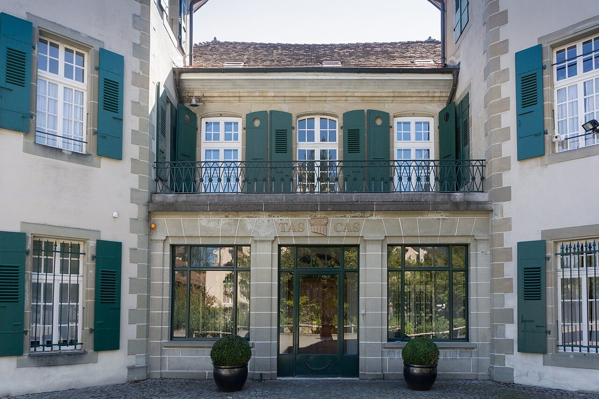

A Turning Point for Fair Play: The Birth of the World Anti-Doping Agency in Lausanne
Established on November 10, 1999, the international body united governments and the Olympic movement to safeguard the integrity of sport.

A New Horizon in the Olympic Capital
On November 10, 1999, the global sports landscape underwent a fundamental transformation. In Lausanne, Switzerland—hailed widely as the Olympic Capital—delegates from more than 140 national governments joined forces with the International Olympic Committee to officially establish the World Anti-Doping Agency.
The creation of the agency followed mounting concern over drug use in elite competitions, stemming from discussions that birthed the 'Declaration of Lausanne' nearly a year prior. Headquartered initially in the Swiss city before relocating its main operations to Montreal, Quebec, Canada, in 2002, the organization was designed to serve as an independent international body dedicated to promoting, coordinating, and monitoring the fight against performance-enhancing substances in sports.

Lausanne, situated on the shores of Lake Geneva and recognized officially as the Olympic Capital since 1994, provided a fitting backdrop for the milestone. While the city's Lausanne office transitioned into a regional hub for Europe, WADA expanded its footprint globally, establishing other regional offices across Africa, Asia/Oceania, and Latin America.
Structure and Evolution of the World Anti-Doping Code
From its inception, WADA was built on a unique partnership model. Funded equally by the IOC and various national governments, its 38-member Foundation Board and 16-member executive committee balance perspectives from public authorities and the sports movement alike, including active and retired athletes. Witold Bańka and Yang Yang were re-elected president and vice-president in May 2025 for a third and final three-year term.
The agency's regulatory cornerstone, the World Anti-Doping Code, harmonized disparate rules across international federations and national organizations. First adopted in Copenhagen in 2003, revised at the World Conference on Doping in Sport in Madrid in November 2007 and updated again in 2015 and 2021, the Code established standardized protocols for testing, scientific research, and educational initiatives. Supported by around 30 accredited laboratories worldwide, WADA cemented the Court of Arbitration for Sport as the ultimate judicial authority for doping disputes.

Navigating Controversy and Looking Forward
As the organization matured into the 21st century, its resolve faced immense institutional challenges. In 2016, academic Richard McLaren, acting as an independent investigator commissioned by WADA, published reports detailing that more than 1,000 Russian athletes across over 30 sports had been involved in or benefited from state-sponsored doping between 2011 and 2015. The findings led to significant international sanctions, including many Russian athletes being barred from the 2018 Winter Olympics. Subsequent decisions by WADA to lift certain bans generated intense debate and criticism from whistleblowers and legal representatives.
More than two decades after its founding convention in Lausanne, WADA oversees approximately 700 sports organization signatories bound by the World Anti-Doping Code. The organization continues to adapt through specialized panels like the Nominations Committee—established in September 2019 with independent figures such as Diane Smith-Gander as inaugural chair—and the Athlete Committee, striving to preserve the foundational right of competitors to participate in a fair and transparent sporting environment.